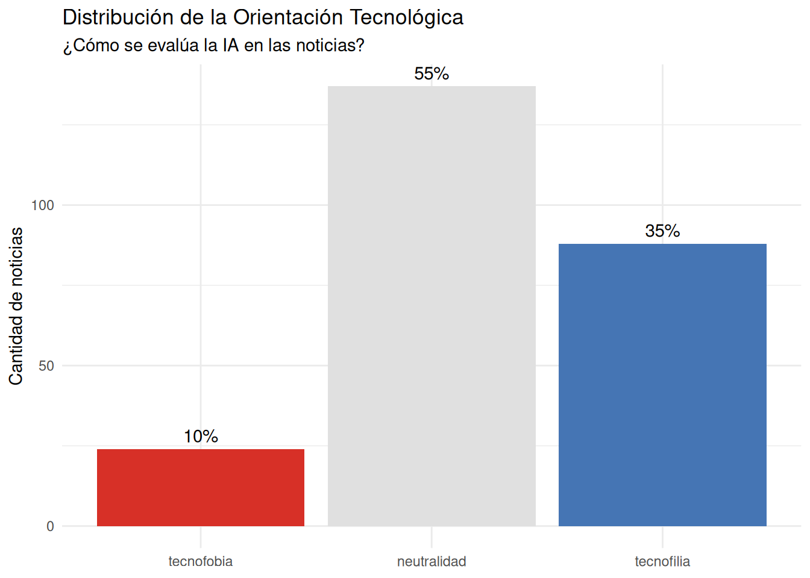
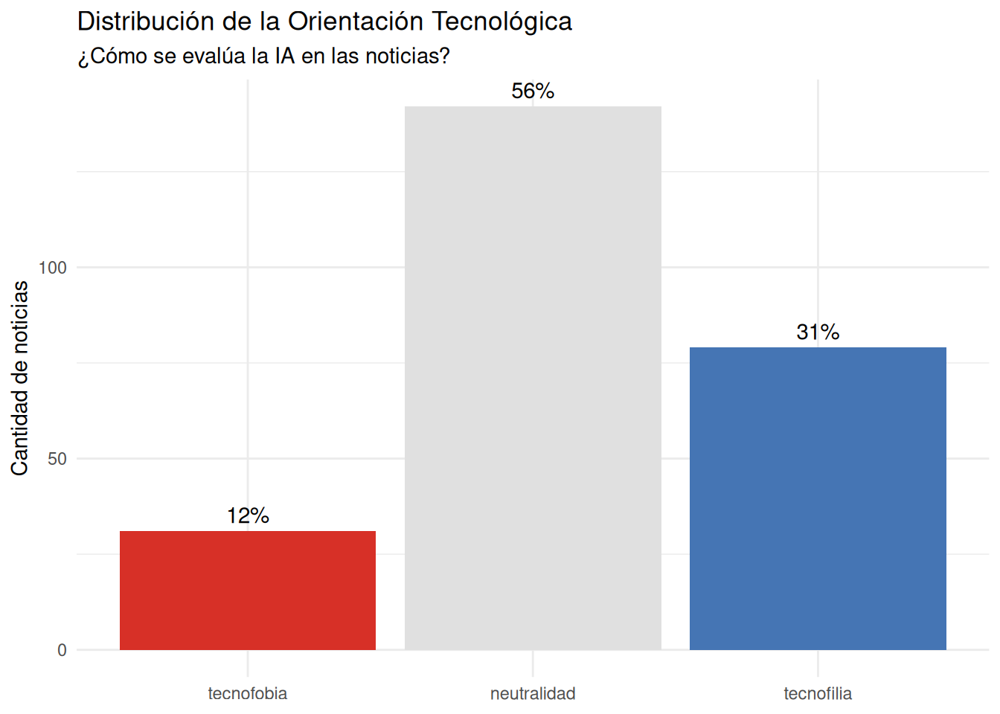
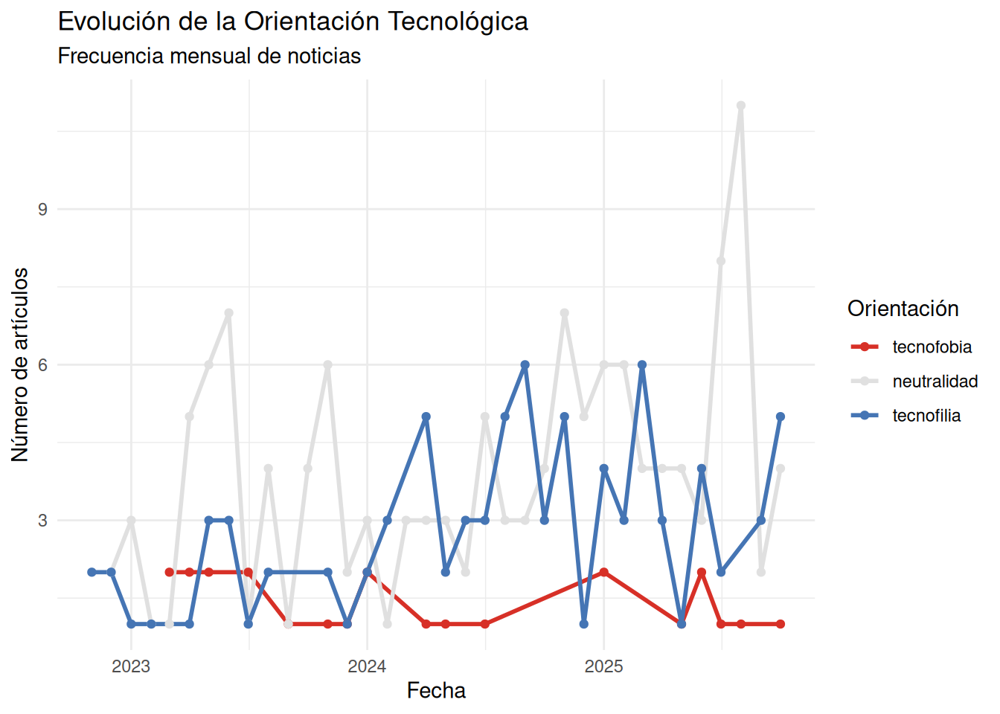
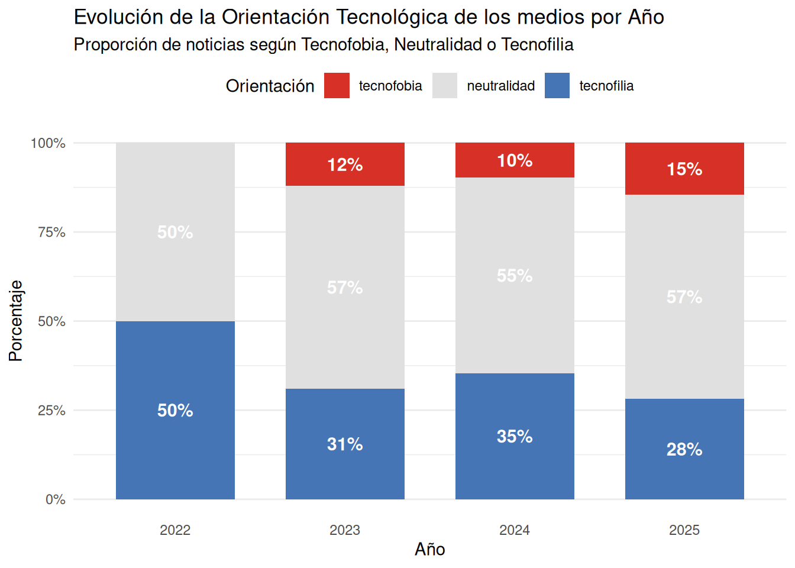
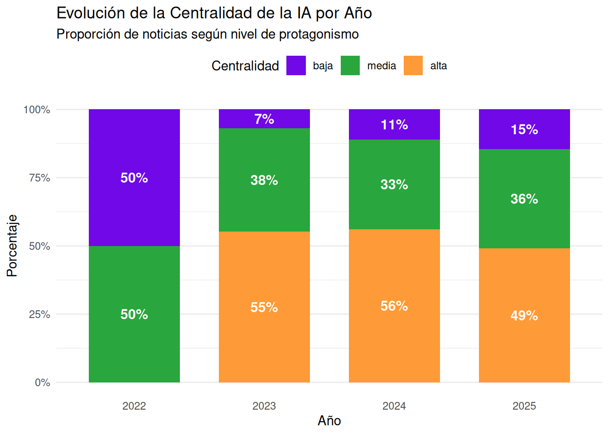
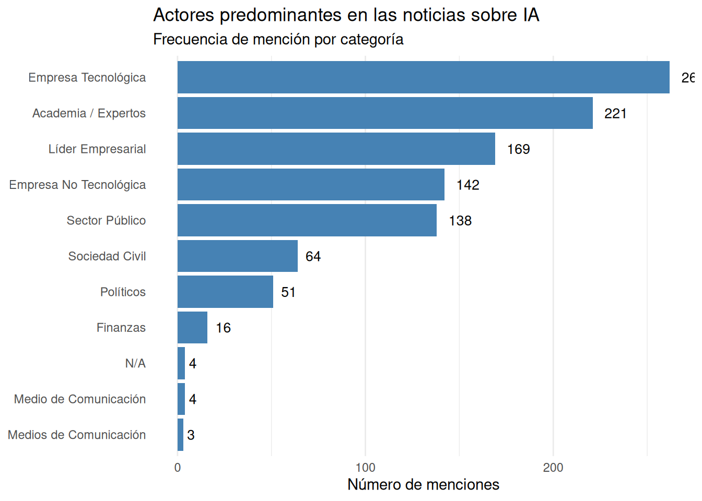

1 Antecedentes
1.1 La revolución de la Inteligencia Artificial
Attention is all you need (Vaswani et al., 2017): Artículo que crea la arquitectura transformer, que es la base de las IA actuales debido a su escalabilidad y eficiencia
Los grandes modelos de lenguaje (LLM por sus siglas en inglés) son modelos de Inteligencia Artificial entrenados en grandes volúmenes de datos, usualmente bajo la arquitectura de transformer, con la capacidad de comprender y generar texto para distintas tareas (traducción, programación, redacción, razonamiento, etc.)
30 de noviembre 2022: lanzamiento de ChatGPT. 100 millones de usuarios en un año.
-
Esto provocó un desarrollo acelerado de la IA en los últimos años:
- Áuge en la competencia y modelos open source: Claude, Gemini, Grok, Kimi-k2, Gemma, Gpt-Oss
- Múltiples aplicaciones: Vibe coding (Cursor, Windsurf), Ciencia (AlphaFold), Imágenes (MidJourney, NanoBanana), video (Veo3, Sora)
- Desarrollo de infraestructura clave: construcción de centros de datos y supercomputadores
- Avances en otras áreas como la robótica, la medicina, la neurociencia, etc.
1.2 Herramientas de consumidor vs. herramientas de desarrollador
Dentro del mercado de la IA, existen distintos productos para distintas necesidades
Los servicios para los consumidores son los que comúnmente uno utiliza, los chatbot accesibles a través de las páginas web o aplicaciones de celular de ChatGpt o Gemini. Usualmente, tienen planes gratuitos y de pago.
Por otro lado, están las plataformas para desarrolladores, comúnmente ofrecidas por las empresas a través de una Interfaz de Programación de Aplicaciones (API por sus siglas en inglés). A diferencia de los chatbots, las APIs cobran por cada llamada o mensaje enviado, y están diseñadas para poder desarrollar usos específicos de los LLM.
En este taller, utilizaremos este segundo enfoque, para aprovechar los beneficios que puede otorgar la Inteligencia Artificial, pero realizar los ajustes necesarios para mantener un flujo de investigación riguroso
1.3 LLMs para análisis cualitativo
Anteriormente, la forma de utilizar text-as-data más común era a través de modelos más básicos, con una menor capacidad de comprender el contexto amplio. Por ejemplo, para identificar tipos de consumidores en un dataset de comentarios, se podía ejecutar un LDA o un STM para modelar los tópicos subyacentes.
Desde la arquitectura transformers, la capacidad de comprensión del contexto se disparó, con algoritmos como BertTopic que aprovechan este avance para realizar tópicos que capturen una mayor complejidad.
Sin embargo, los LLMs llevan esto a otro nivel, permitiendo realizar análisis profundo, cadenas de pensamiento, codificaciones y mapear redes entre actores. Softwares como Atlas.ti, ampliamente utilizado para el análisis cualitativo, ya integraron la codificación automática con GPT en sus útimas versiones.
-
La literatura reciente ha demostrado formas innovadoras de utilizar estas herramientas para diferentes técnicas de análisis cualitativo:
Para realizar análisis de contenido (Bijker et al., 2024)
Para mapear redes entre actores (Bro, 2025)
Para realizar análisis de discurso (Zhang et al., 2025)
Para teoría fundamentada (Yue et al., 2025)
La adaptación de los métodos y su validación es algo que está recién comenzando, y mientras que los estudios han destacado una buena correspondencia entre los códigos que realizan los LLM y los humanos, se han presentado grandes limitaciones y recomendaciones
Limitaciones
- Los códigos pueden ser más generales y omitir temas sensibles
- Los LLMs tienen el riesgo de alucinar (aunque esto ha reducido considerablemente en el último tiempo)
- Tienen una mayor dificultad de capturar tendencias generales
- Recomendaciones
- Ingeniería de prompts precisa y bien pensada para el caso de uso específico
- Parametrización y selección correcta de modelos
- Colaboración y validación constante entre el investigador y el LLM, este es una herramienta útil, no reemplaza el trabajo.
2 Contenidos del taller
Configuración de la sesión y preparaciones necesarias
Diseño y optimización de prompts, creación de criterios para evaluar los resultados de los LLMs
Comprensión básica de los principales parámetros de los modelos
Creación de una función para aplicar el análisis cualitativo y automatización de esta a lo largo de un dataframe. Utilizaremos Gemini ya que otorga créditos gratis de la API.
Análisis de la información obtenida
Todo el contenido del taller quedará a disposición posteriormente. El taller asume que tienen algunos conocimientos de R básicos-intermedios, cómo manejo de dataframes, funciones, iteraciones y el ecosistema tidyverse, por lo que no entraremos en mayores detalles sobre todos estos contenidos. El principal objetivo es que puedan realizar análisis cualitativo de forma automatizada utilizando LLMs a través de R, independientemente del área de estudios o el caso de uso que tengan, y logren adaptar las herramientas técnicas que les enseñaremos de forma sencilla.
3 Configuración de la sesión
4 Procesamiento y carga de los datos
Nota: Por si acaso alguien tiene algún error inesperado para utilizar datamedios, preparemos un csv con la data ya extraída para que lo utilicen.
Cargamos los datos del paquete datamedios (https://exetrujillo.github.io/datamedios/).
Code
datos <- datamedios::extraer_noticias_fecha("inteligencia artificial", "2025-11-1", "2025-11-25")Fuentes parseadas: bbclFuentes parseadas: emol-todasTotal de resultados posibles: 3076Noticia mas reciente disponible es de la fecha: 2025-11-26 15:24:54No hay mas noticias dentro del rango de fechas. Terminando la busqueda.Total de noticias encontradas en el rango de fechas: 55Total de resultados disponibles en emol para la busqueda: 793Fecha mas reciente: 2025-11-24 12:03:00Se alcanzo la fecha de inicio. Finalizando extraccion.Total de resultados disponibles en mediosregionales para la busqueda: 269Fecha mas reciente: 2025-11-24 11:01:00Se alcanzo la fecha de inicio. Finalizando extraccion.Total de resultados disponibles en guioteca para la busqueda: 71Fecha mas reciente: 2025-10-09 11:39:50Se alcanzo la fecha de inicio. Finalizando extraccion.No se encontraron datos para la fuente: guioteca en el rango de fechas especificado.Code
# Si no te funciona datamedios puedes usar esto
# noticias_muestra <- read.csv("noticias_muestra.csv")Limpiamos los datos y seleccionamos las columnas de interés.
Code
datos <- datamedios::limpieza_notas(datos, sinonimos= c("IA", "chat gpt", "openai", "chatbot", "chatgpt"))
datos_filtrados <- datos %>%
select(titulo, contenido_limpio, fecha, medio, url)5 Explorar data
Code
datamedios::grafico_notas_fecha(datos_filtrados, "Inteligencia artificial", tema = "dark")Warning: 'config' objects don't have these attributes: 'toimageButtonOptions'
Valid attributes include:
'autosizable', 'displaylogo', 'displayModeBar', 'doubleClick', 'doubleClickDelay', 'editable', 'edits', 'fillFrame', 'frameMargins', 'globalTransforms', 'linkText', 'locale', 'locales', 'logging', 'mapboxAccessToken', 'modeBarButtons', 'modeBarButtonsToAdd', 'modeBarButtonsToRemove', 'notifyOnLogging', 'plotGlPixelRatio', 'plotlyServerURL', 'queueLength', 'responsive', 'scrollZoom', 'sendData', 'setBackground', 'showAxisDragHandles', 'showAxisRangeEntryBoxes', 'showEditInChartStudio', 'showLink', 'showSendToCloud', 'showSources', 'showTips', 'staticPlot', 'toImageButtonOptions', 'topojsonURL', 'typesetMath', 'watermark'Seleccionamos una submuestra de 20 noticias para reducir el tiempo de procesamiento de los análisis.
Code
set.seed(123)
noticias_muestra <- slice_sample(datos_filtrados, n=20)Exploramos el dataframe de noticias y guardamos los datos brutos de la muestra.
Code
head(noticias_muestra, 5) titulo
72 Lo celebran por 37 días: La importancia que tiene para la economía china el Día del Soltero
143 Se acelera la inteligencia artificial: OpenAI firma un mega contrato con Amazon Web Services
4 Tres proyectos científicos de la USS son elegidos por ANID con fondos del programa Fondequip
8 Golpe a las acciones de Nvidia: Reportan que Meta analiza millonaria compra de chips de IA a Google
32 Wall Street cierra en rojo ante temores de burbuja en la IA y una próxima caída de la bolsa
contenido_limpio
72 China culmina este martes su tradicional maratón de compras en línea, el ‘Día del Soltero’, en una edición que con 37 días de duración ha sido la más prolongada hasta ahora, en medio del empeño del Gobierno por impulsar el consumo interno para reactivar la demanda nacional. La celebración llega poco después de que se diera a conocer el nuevo plan quinquenal del país, que exhorta a “elevar de forma notable la tasa de consumo de los hogares” y “reforzar el papel de la demanda interna como motor principal del crecimiento”, mediante el aumento del gasto social y un mayor apoyo a sectores estratégicos minoristas. El estímulo se canaliza, especialmente, a través de subsidios para planes ‘renove’ desplegados por las autoridades. “La política de subsidio nacional para electrodomésticos, que se aplica en el ‘Doble 11’, impulsa el consumo en categorías clave y permite a los consumidores obtener beneficios tangibles al alinear el descuento de la plataforma con ayudas gubernamentales”, explicó recientemente la Asociación China de Consumidores en un comunicado. Un festival cada vez más largo Lejos queda ya la jornada única del 11 de noviembre (de ahí el nombre de 11-11) que concentraba todas las compras compulsivas unos años atrás y que fue bautizada como ‘Día del Soltero’ por la individualidad contenida en los cuatro números uno que conforman la fecha. Las grandes plataformas como Taobao, JD o Douyin activaron sus campañas desde finales de septiembre, en una edición que pasará a la historia por haber sido la más prolongada hasta la fecha. “El alargamiento del ciclo de compras ayuda a reducir la ansiedad de los consumidores y permite a las plataformas organizar mejor las promociones y los envíos”, explicó Cao Lei, director del Centro de Investigación de Comercio Electrónico de China, citado por la agencia Xinhua. Sin embargo, esta estrategia también podría responder a tácticas internas de las empresas: “Cuanto más largo es el periodo, mejores son los datos de ventas totales”, afirmó Pan Helin, miembro del Comité de Expertos en Economía de la Información del Ministerio de Industria y Tecnología. Además, “el exceso de estímulos de marketing ha generado insensibilidad entre los usuarios; el umbral de deseo de compra es ahora mucho más alto”, apuntó Chen Duan, director del Centro de Innovación en Economía Digital de la Universidad Central de Finanzas y Economía. Así, el alargamiento del festival ha llevado a un cierto deslucimiento de la ocasión: “Echo de menos cuando hace años esperábamos a las 0.00 del día 11 y competíamos por ‘cazar’ precios que eran realmente bajos”, lamentaba una usuaria en la red social Weibo, quien añadía que “ahora los precios cambian constantemente y no comprendo las ofertas”. Respecto a la confusión de precios, el experto en comercio electrónico Guo Tao, citado por Beijing News, recomendó que “para afrontar el caos de precios, las plataformas deben asumir más responsabilidad, por ejemplo, simplificando el cálculo de los cupones y promoviendo el rastreo de precios”. No más énfasis en el volumen de ventas Las grandes firmas como Alibaba dejaron atrás los seguimientos en tiempo real del volumen de transacciones, la gran obsesión hace unos años, desde que el presidente chino, Xi Jinping, declarase en 2021 la “prosperidad común” como un objetivo económico y social. En lugar de eso, han apostado por simplificar las promociones y diversificar formatos. A falta de datos definitivos, algunos datos parciales ayudan a ilustrar la dimensión del evento: hasta el 31 de octubre de 2025, la firma local Syntun calculaba que el festival ya había generado un volumen de ventas acumuladas de 1,0026 billones de yuanes (unos 130.000 millones de euros o 140.000 millones de dólares). La cifra es significativa, aunque no directamente comparable con estimaciones como la de la firma Bain & Company para el festival completo de 2024, cuando el volumen total ascendió a unos 1,442 billones de yuanes (aproximadamente 187.000 millones de euros o 202.000 millones de dólares), con un aumento interanual del 27%. Envíos ultrarrápidos e inteligencia artificial Una de las principales novedades de esta edición ha sido el auge del comercio inmediato: entregas ultrarrápidas, productos de cercanía y nuevas estrategias para conectar almacenes y usuarios en plazos de minutos, en lugar de esperar días a recibir los paquetes. Además, las grandes plataformas han aprovechado esta campaña para integrar con más profundidad herramientas de inteligencia artificial. En el caso de JD, se ofrecieron gratuitamente a los comerciantes funciones como generación automática de imágenes, redacción de descripciones de productos y asistencia virtual en servicio al cliente. En Taobao, propiedad de Alibaba, la función ‘búsqueda por IA’ genera listas personalizadas de productos en función de los hábitos recientes de navegación del usuario, incluyendo vídeos y descripciones interactivas para acelerar el proceso de compra.
143 La tecnológica OpenAI llegó a un acuerdo con Amazon para acceder a infraestructura de la compañía por 38.000 millones de dólares, con el fin de acelerar y hacer más eficientes tareas de inteligencia artificial (IA). En concreto, esta alianza proporcionará “infraestructura de primer nivel” de la plataforma en la nube Amazon Web Services (AWS) para la IA de OpenAI, según un comunicado divulgado este lunes por Amazon. Así, la compañía dirigida por Sam Altman tendrá acceso a la capacidad de cálculo de AWS, que incluye cientos de miles de unidades de procesamiento gráfico (GPU) proporcionados por Nvidia y “de última generación”. La combinación de las nuevas GPU de Nvidia, GB200 y GB300, a través de servidores de AWS permite a OpenAI ejecutar cargas de trabajo de manera eficiente y con un rendimiento óptimo, de acuerdo con la nota. En un primer momento, OpenAI utilizará los centros de datos ya existentes de AWS, pero posteriormente Amazon construirá infraestructura específicamente para la tecnológica. Estas instalaciones contarán con un “sofisticado diseño arquitectónico” ideado para obtener la máxima eficiencia y rendimiento en el procesamiento de IA. Altman aseguró en el comunicado que este acuerdo “refuerza el amplio ecosistema informático que impulsará esta nueva era y pondrá la IA avanzada al alcance de todos”. “La amplitud y la disponibilidad inmediata de una computación optimizada demuestran por qué AWS se encuentra en una posición única para dar soporte a las enormes cargas de trabajo de IA de OpenAI”, apuntó por su parte el director ejecutivo de AWS, Matt Garman. Tras darse a conocer la noticia, las acciones de Amazon subían un 5% en los primeros compases de la bolsa de Wall Street. Este es el primer acuerdo entre AWS y OpenAI; hasta el pasado enero, Azure, la parte de Microsoft encargada de la “nube” de internet, era el único proveedor exclusivo de OpenAI en todo tipo de servicios relacionados con este ámbito.
4 Tres propuestas de la Universidad San Sebastián (USS) fueron seleccionadas en el Concurso de Equipamiento Científico y Tecnológico Mediano FONDEQUIP 2025 de la Agencia Nacional de Investigación y Desarrollo (ANID). Esta convocatoria nacional financia la adquisición de equipamiento científico mediano con el objetivo de fortalecer las capacidades de investigación mediante equipos de uso compartido y abiertos a la comunidad científica. En esta línea, las iniciativas adjudicadas permitirán instalar infraestructura de última generación en las sedes de Concepción y Valdivia, sumando un financiamiento total cercano a los mil millones de pesos. En esta versión del concurso se seleccionaron 30 propuestas a nivel nacional, ubicando a la USS como la segunda institución con mayor número de equipamientos adjudicados junto con la Usach. Neurotecnología para la rehabilitación Recuperar la funcionalidad tras un accidente cerebrovascular o un daño neurológico es un desafío complejo que requiere un abordaje integral, desde la neurociencia hasta la práctica clínica. En esta línea, el proyecto “Implementación de Plataforma Neurotecnológica: Exoesqueleto Robótico Guiado por Biomarcadores”, liderado por el Dr. Cristhian Mendoza en la sede Concepción, busca potenciar la rehabilitación mediante la integración de neurociencia, robótica e inteligencia artificial. La plataforma combinará un exoesqueleto robótico con sensores de actividad cerebral, muscular y de dolor, junto con estimulación cerebral no invasiva. De esta forma, el sistema podrá “aprender” de las señales del paciente y adaptar el entrenamiento en tiempo real, optimizando el proceso de rehabilitación. Al vincular la robótica con mediciones neurofisiológicas in vivo, este proyecto permitirá explorar cómo responden los circuitos cerebrales durante el entrenamiento asistido. Esto podría traducirse en terapias más efectivas para pacientes con lesiones neurológicas, a la vez que generará conocimiento sobre los procesos de recuperación neuroplástica del sistema nervioso. Asimismo, la plataforma promoverá la convergencia y el trabajo colaborativo entre áreas como medicina, ingeniería y rehabilitación. Para el Dr. Mendoza, la adjudicación de este FONDEQUIP “representa un logro significativo, porque no solo financia el equipamiento, sino también la infraestructura y la capacitación internacional del equipo, habilitando futuras líneas de investigación y colaboraciones transdisciplinarias”. “Nuestro objetivo es instalar capacidades tecnológicas que permitan avanzar hacia una neurorrehabilitación más efectiva y basada en evidencia fisiológica real, con un impacto directo en la calidad de vida de los pacientes”, comentó. Dr. Cristhian Mendoza, USS sede Concepción. Plataforma de ultracentrifugación para investigación biológica En la sede Valdivia, el Dr. Gonzalo Mardones encabeza la “Unidad de centrifugación para investigación biológica”, que instalará equipamiento de ultracentrifugación de última generación para abordar un paso crítico de la ciencia biomédica: la separación eficiente de componentes biológicos. La unidad contará con dos ultracentrífugas (una de piso y otra de mesa) capaces de girar a velocidades extremas, posibilitando fraccionar muestras biológicas complejas y aislar sus componentes más diminutos, incluso partículas virales, para su estudio. Hasta ahora, la USS solo contaba con ultracentrífugas en Santiago, lo que obligaba a los grupos de Valdivia y Puerto Montt a depender de laboratorios distantes para etapas críticas de sus experimentos. Instalada en el Centro de Estudios Científicos (CECs) de Valdivia, la nueva unidad dará mayor autonomía a las sedes de Valdivia y Puerto Montt para impulsar proyectos biomédicos de frontera. Esto fortalecerá líneas de investigación, desde la biología celular hasta la medicina traslacional, aportando a la formación de nuevos investigadores y reforzando así la ciencia regional. El Dr. Mardones explicó que este proyecto contempla la adquisición de dos centrífugas que, en conjunto, conforman una plataforma altamente versátil. “Su capacidad nos permitirá separar componentes intracelulares y obtener distintos tipos de muestras necesarias para el desarrollo de investigación biológica avanzada, beneficiando tanto a investigadores de diversas sedes de la USS como a equipos de otras universidades, y ofreciendo a nuestros estudiantes la oportunidad de formarse con equipamiento de alto estándar”, acotó. Dr. Gonzalo Mardones, USS sede Valdivia. Documentación biomolecular de alta precisión También en Valdivia, el Dr. Rodrigo Maldonado lidera la “Unidad de Documentación Biomolecular de Escaneo Láser”, que incorporará a la USS un sistema de escaneo láser para detectar biomoléculas en cantidades ínfimas. Esta herramienta leerá señales fluorescentes y quimioluminiscentes en muestras de laboratorio, lo que permitirá visualizar moléculas como proteínas y ácidos nucleicos con alta sensibilidad. El nuevo equipamiento permitirá analizar la expresión de genes y proteínas con mayor precisión y monitorear la activación de vías celulares con una resolución y rapidez superiores a las técnicas tradicionales. Al ser capaz de examinar simultáneamente múltiples muestras en geles, membranas u otros soportes, optimizará el trabajo en laboratorios biomédicos y biotecnológicos, y servirá de plataforma para proyectos colaborativos dentro y fuera de la USS. Dr. Rodrigo Maldonado, USS sede Valdivia. Para el Dr. Maldonado, “esta es una muy buena noticia para los investigadores del CECs, porque este documentador por escaneo láser estará disponible para todo el laboratorio”. “Había procedimientos que antes no podíamos realizar, o para los que teníamos que recurrir a otras universidades, y ahora podremos ejecutarlos directamente aquí, alcanzando niveles de sensibilidad que antes no estaban a nuestro alcance y usando menos consumibles”, puntualizó. En conjunto, estos tres proyectos se articulan con la trayectoria que sigue la Universidad San Sebastián para fortalecer la ciencia y la tecnología en Chile mediante la formulación de propuestas pertinentes, de excelencia, con perspectiva territorial y colaborativa.
8 La tecnológica Meta valora comprar por miles de millones de dólares chips de inteligencia artificial (IA) desarrollados por Google -cuya matriz es Alphabet-, según The Information. En concreto, la empresa de Mark Zuckerberg está en conversaciones para adquirir unidades de procesamiento de tensor (TPU) de Google e incorporarlas en sus centros de datos en 2027, de acuerdo con el medio, que cita a una fuente familiarizada con el asunto. La compañía también valora “alquilar” el próximo año chips de Google Cloud, su plataforma en la nube, agrega The Information. El posible acuerdo entre Meta y Google que remece al sector de IA Google, al igual que otros titanes de la tecnología como Microsoft, Amazon o Meta, busca crear la infraestructura de IA del futuro, y otras empresas como Anthropic ya usan estos chips. Según medios especializados, la mayoría de los grandes modelos de lenguaje y cargas de trabajo de IA se han basado en las unidades de procesamiento gráfico (GPU) de Nvidia, pero las TPU de Google pertenecen a la categoría de silicio personalizado, lo que ofrece ventajas en precio, rendimiento y eficiencia. A principios de mes, Google anunció su chip más potente hasta la fecha, Ironwood, que precisamente se trata de una unidad de procesamiento de tensor, en un intento por captar clientes de IA y competir con Nvidia. De hecho, la noticia de la posible compra de estos TPU por parte de Meta hacía caer hoy las acciones de Nvidia un 4% en las operaciones previas a la apertura de Wall Street. Por su parte, Alphabet, que se encamina a alcanzar los US$4 billones en capitalización por primera vez, subía un 4% antes del toque de campana. TradingView Widget BEGIN Track all markets on TradingView { "lineWidth": 2, "lineType": 0, "chartType": "area", "fontColor": "rgb(106, 109, 120)", "gridLineColor": "rgba(46, 46, 46, 0.06)", "volumeUpColor": "rgba(34, 171, 148, 0.5)", "volumeDownColor": "rgba(247, 82, 95, 0.5)", "backgroundColor": "#ffffff", "widgetFontColor": "#0F0F0F", "upColor": "#22ab94", "downColor": "#f7525f", "borderUpColor": "#22ab94", "borderDownColor": "#f7525f", "wickUpColor": "#22ab94", "wickDownColor": "#f7525f", "colorTheme": "light", "isTransparent": false, "locale": "es", "chartOnly": false, "scalePosition": "right", "scaleMode": "Normal", "fontFamily": "-apple-system, BlinkMacSystemFont, Trebuchet MS, Roboto, Ubuntu, sans-serif", "valuesTracking": "1", "changeMode": "price-and-percent", "symbols": [ [ "Meta", "NASDAQ:META|1D" ], [ "Google", "NASDAQ:GOOGL|1D" ], [ "Nvidia", "NASDAQ:NVDA|1D" ] ], "dateRanges": [ "1d|1", "1m|30", "3m|60", "12m|1D", "60m|1W", "all|1M" ], "fontSize": "10", "headerFontSize": "medium", "autosize": false, "width": 600, "height": 450, "noTimeScale": false, "hideDateRanges": false, "hideMarketStatus": false, "hideSymbolLogo": false } TradingView Widget END
32 Wall Street cerró este martes en rojo, con los principales arrastrados por los recurrentes temores de una burbuja en el sector de la inteligencia artificial (IA) y las recientes previsiones de varias entidades sobre una corrección en el mercado bursátil. El índice Nasdaq, que aglutina a las tecnológicas, bajó un 2,04%; el S&P 500 cedió un 1,17% y el Dow Jones de Industriales un 0,53%, coincidiendo con una subida en la volatilidad, medida por el índice Vix, que se disparó casi un 11%. La empresa de IA más perjudicada en la jornada fue Palantir (perdió un 8%), una tecnológica especializada en el análisis de datos a gran escala para los sectores de defensa e inteligencia, pese a que ayer publicó unos resultados mejores de lo esperado y buenas perspectivas de demanda. Según los analistas, la relación entre el valor de Palantir y sus resultados es muy alta, por lo que está bajo una presión considerable para seguir aumentando de manera constante sus beneficios e ingresos. Wall Street cierra a la baja El gurú inversor Michael Burry, conocido por vaticinar y lucrarse con la crisis financiera de 2008 e inspirar la película ‘The Big Short’, reveló hoy que especula con la caída precisamente de Palantir y Nvidia y mediante opciones de venta, en línea con esas expectativas de una burbuja. El sector de la tecnología tuvo hoy las mayores pérdidas (-2,27%), con fuertes pérdidas para Intel (-6%), Nvidia (-4%), Oracle (-3,7%) o AMD (-3,7%), destacadas en el desarrollo de la IA. En paralelo, los máximos ejecutivos de las financieras Goldman Sachs y Morgan Stanley, David Solomon, y Ted Pick, dijeron este martes en un foro en Hong Kong que esperan una corrección bursátil de al menos al 10% en los próximos meses, algo que consideraron normal, pero que no gustó entre los inversores. Aparte de eso, la plaza estadounidense reaccionaba negativamente a la posibilidad de que la Reserva Federal (Fed) no recorte los tipos de interés en su reunión de diciembre, como se espera generalmente, dadas las dudas expresadas ayer por una de sus gobernadores, Lisa Cook. En otros mercados, el crudo de Texas (WT) bajó un 0,8%, hasta los US$60,56, mientras que el bitcoin se desplomaba un 6,7%, perdiendo en nivel de los US$100.000.
fecha medio
72 2025-11-11 bbcl
143 2025-11-03 bbcl
4 2025-11-19 bbcl
8 2025-11-25 bbcl
32 2025-11-04 bbcl
url
72 https://www.biobiochile.cl/noticias/economia/actualidad-economica/2025/11/11/se-celebra-por-37-dias-la-importancia-para-la-economia-de-china-que-tiene-el-dia-del-soltero.shtml
143 https://www.biobiochile.cl/noticias/economia/negocios-y-empresas/2025/11/03/se-acelera-la-inteligencia-artificial-openai-firma-un-mega-contrato-con-amazon-web-services.shtml
4 https://www.biobiochile.cl/noticias/ciencia-y-tecnologia/ciencia/2025/11/19/tres-proyectos-cientificos-de-la-uss-son-elegidos-por-anid-con-fondos-del-programa-fondequip.shtml
8 https://www.biobiochile.cl/noticias/economia/negocios-y-empresas/2025/11/25/golpe-a-nvidia-reportan-que-meta-analiza-comprar-miles-de-millones-de-dolares-en-chips-de-ia-a-google.shtml
32 https://www.biobiochile.cl/noticias/economia/actualidad-economica/2025/11/04/wall-street-cierra-en-rojo-ante-temores-de-burbuja-en-la-ia-y-una-proxima-correccion-de-la-bolsa.shtmlCode
write.csv(noticias_muestra, "noticias_muestra.csv")6 Configuramos Gemini
Cargamos las variables de entorno, en particular la API key de Gemini. Además hacemos un test simple. Si recibimos la respuesta de Gemini entonces podemos pasar a lo siguiente.
Code
readRenviron(".Renviron")
setAPI(Sys.getenv("GEMINI_API_KEY")) # check https://makersuite.google.com/app/apikeyℹ API key ...ZKEw is set.→ You may try `gemini_chat('What is CRAN?')`Code
gemini("¿Cuál es la diferencia entre la inteligencia artificial y la inteligencia artesanal? Responde en una línea")Gemini is answering... text
"La diferencia clave es que la inteligencia artificial es creada por máquinas a través de algoritmos, mientras que la inteligencia artesanal es desarrollada por humanos a través del aprendizaje y la experiencia.\n" 7 Parámetros de gemini (y casi todos los LLM)
Configuramos los parámetros para el uso de la API.
- g_model: En model se pueden usar varios para respuesta de texto, como “gemini-2.5-pro”, “gemini-2.5-flash”, “gemini-2.5-flash-lite”, etc. Pueden revisar el listado completo aquí.
- g_temperature: Podemos elegir también la temperatura para el modelo. Apunta a la objetividad-creatividad permitida en las respuestas. Números más cercanos a cero serían más “objetivos” y números más cercanos a dos serían más “creativos”.
- g_seed: También podemos setear una semilla para hacer los resultados más reproducibles aunque no podemos asegurarlo completamente.
- Otros parámetros que para este caso recomendamos no cambiarlos, sin emabrgo, su información puede encontrarse en la documentación de la API de Gemini.
Code
# Parámetros configurables
g_model = "2.5-flash-lite"
g_temperature = 0.7
g_seed = 42
# Los siguientes recomendamos no cambiarlos para pruebas básicas
# maxOutputTokens = 8192
# topK = 40
# topP = 0.95
# timeout = 608 Prompts
Cuando diseñamos prompts buscamos, por lo general, la respuesta a cierta pregunta o la resolución de algún problema. Además, la forma en la que diseñamos un prompt influye estructuralmente en la respuesta que podamos recibir de un modelo de LLM. En el presente taller haremos el ejercicio interactivo de intentar responder a la siguiente pregunta de investigación: ¿Cómo se configura la construcción social y mediática de la Inteligencia Artificial en el discurso noticioso actual en medios de prensa escritos de alto impacto en Chile?
En estricto rigor, Gemini no permite que le pasemos instrucciones de sistema, petición de texto y estructuras de respuesta por separado. Nosotros en este caso los separamos en objetos distintos solo para hacerlo más modular. Tenemos en este caso 3 partes, para comenzar a moldear las respuestas dependiendo de nuestro caso específico de estudio:
system_prompt: La idea es darle una idea específica de como “qué tipo de persona” tiene que comportarse y qué campos de conocimientos debe manejar para responder (es distinto preguntarle de inteligencia artificial a un experto en ciencias de la computación o a un periodista). Podemos utilizar este recurso para delimitar ciertos marcos teóricos y disciplinares al momento de esperar una respuesta.
prompt_instruccion: Como su nombre lo dice, las instrucciones específicas. En nuestro caso, aquí es donde operacionalizamos la pregunta de investigación. Debemos indicarle explícitamente al modelo qué dimensiones teóricas debe buscar. Aquí traducimos conceptos abstractos (como la construcción social o el encuadre mediático) en directrices concretas: evaluar si la tecnología se presenta como amenaza u oportunidad (tecnofobia/tecnofilia), identificar qué actores tienen voz (autoridad experta vs. sociedad civil) y detectar los sesgos latentes. Básicamente, esta sección funciona como nuestro libro de códigos o pauta de análisis cualitativo, asegurando que el modelo no divague, sino que interrogue al texto periodístico con un propósito definido.
json_estructura: Finalmente, definimos el formato de salida. Aunque el análisis sea cualitativo, necesitamos sistematizar la información para poder trabajarla a escala en R. Al exigir una respuesta en formato JSON estricto, forzamos al modelo a sintetizar su razonamiento complejo en una estructura de datos legible por la máquina. En otras palabras, transformar cientos de análisis de texto individuales en un dataframe. Gracias a esto, podremos posteriormente calcular frecuencias, correlacionar variables (por ej. ¿un medio es más tecnofílico que otro? ¿los medios de la capital son más tecnofílicos que los de regiones rurales?) y visualizar los hallazgos de nuestra investigación de manera cuantitativa.
Nuestro propósito aquí es mostrar la estructura que usamos para que un LLM siga nuestras instrucciones como queremos, pero para cada caso de uso el tipo de prompt, los marcos teóricos, preguntas específicas y estructura de respuesta que pidamos será distinta.
Code
system_prompt <- "Eres un científico social experto en análisis cualitativo con formación interdisciplinaria en sociología, antropología, ciencias políticas y ciencias de la comunicación. Tienes amplia experiencia en investigación de medios, análisis de discurso, estudios culturales y semiótica social. Posees la capacidad de examinar contenido mediático desde múltiples perspectivas teóricas, identificando marcos narrativos e interpretativos, agendas mediáticas, construcciones simbólicas y procesos de significación. Mantienes una perspectiva académica rigurosa y pensamiento crítico interdisciplinario."
prompt_instruccion <- "Analiza la siguiente noticia relacionada con inteligencia artificial desde una perspectiva de ciencias sociales y comunicación. Tu análisis debe ser profundo y reflexivo, examinando tanto el contenido explícito como los elementos implícitos y simbólicos.
Requisitos para el análisis:
- Determina el rol específico que cumple la IA en la noticia: ¿es el tema central, un elemento secundario, o apenas se menciona?
- Evalúa la centralidad de la IA en la narrativa y su relevancia real para el contenido
- Identifica orientaciones tecnofóbicas o tecnofílicas en el tratamiento informativo
- Examina cómo se representa la IA: sus capacidades, limitaciones, riesgos o beneficios
- Analiza los marcos interpretativos y narrativos utilizados para contextualizar la tecnología
- Detecta sesgos, omisiones o énfasis particulares en la construcción del discurso sobre IA
- Considera las implicaciones sociales, económicas, políticas o éticas planteadas
- Identifica actores sociales mencionados y sus posiciones respecto a la IA
- Evalúa qué perspectivas están presentes o ausentes en el debate
- Genera keywords conceptuales que capturen la esencia sociológica del contenido
- Proporciona un resumen analítico que sintetice los hallazgos principales
Mantén un enfoque crítico y académico, fundamentando tus observaciones únicamente en el contenido analizado."
json_estructura <- 'Responde exclusivamente en formato JSON válido. Tu respuesta debe ser ÚNICAMENTE así, comenzando con "{" y terminando con "}".
** NO AGREGUES BLOQUES DE CÓDIGO EN TU RESPUESTA (de esas que tienen este caracter `)**
Consideraciones:
- Las keywords deben ser 5, ir en minúsculas y si se componen de más de una palabra llevan espacios entre ellas.
- Deben ser 5 actores principales, si no existe alguno entrega el campo igualmente con NULL.
- Si el rol de un actor no está relacionado con la IA indícalo explícitamente.
- Label: Máximo 3 palabras. Si la IA no es central en la noticia, los labels no deben estar relacionados con la IA.
Estructura:
{
"keywords": ["palabra1", "palabra2", "palabra3"],
"orientacion_tecnologica": "tecnofobia|tecnofilia|neutralidad",
"centralidad_ia": "alta|media|baja",
"actores_principales": [
{
"nombre": "nombre_del_actor",
"rol_respecto_ia": "descripción_breve_de_su_posición_o_relación_con_ia"
}
],
"analisis": "Análisis conciso en 2-3 oraciones que sintetice los hallazgos más relevantes del enfoque sociológico y comunicacional.",
"label": "etiqueta_descriptiva_de_la_noticia"
})
'9 Función para crear prompt pasándole las noticias
Aquí concatenamos las partes del prompt que hicimos antes y le entregamos un input estructurado al LLM, pasándole el título y el contenido de la noticia. Al final imprimimos el resultado del prompt para una sola fila.
Code
# Crear prompt completo con contexto
crear_prompt_completo <- function(fila_noticia) {
# Extraer información de la fila
titulo <- fila_noticia$titulo
contenido <- fila_noticia$contenido_limpio
fecha <- fila_noticia$fecha
# Crear contexto de la noticia
contexto_noticia <- paste0(
"# CONTEXTO DE LA NOTICIA:\n",
"Título: ", titulo, "\n",
"CONTENIDO:\n", contenido
)
# Combinar todos los elementos del prompt
prompt_final <- paste(
system_prompt,
"\n\n",
prompt_instruccion,
"\n\n",
contexto_noticia,
"\n\n",
json_estructura,
sep = ""
)
return(prompt_final)
}
# Aquí ejecutamos
prompt_example <- crear_prompt_completo(noticias_muestra[5,])
example <- gemini(
prompt_example,
model = g_model,
temperature = g_temperature,
seed = g_seed
)Gemini is answering...Code
cat(example)```json
{
"keywords": [
"burbuja especulativa",
"riesgo financiero",
"mercado bursátil",
"narrativa de crisis",
"construcción de valor"
],
"orientacion_tecnologica": "tecnofobia",
"centralidad_ia": "media",
"actores_principales": [
{
"nombre": "Palantir",
"rol_respecto_ia": "empresa de IA afectada negativamente por temores de burbuja, a pesar de buenos resultados."
},
{
"nombre": "Nvidia",
"rol_respecto_ia": "empresa de IA afectada negativamente por temores de burbuja y especulación de caída."
},
{
"nombre": "Michael Burry",
"rol_respecto_ia": "gurú inversor que especula contra empresas de IA (Palantir, Nvidia) ante expectativas de burbuja."
},
{
"nombre": "Goldman Sachs",
"rol_respecto_ia": "financiera que anticipa una corrección bursátil general, no directamente ligada a la IA pero en el mismo contexto de mercado."
},
{
"nombre": "Morgan Stanley",
"rol_respecto_ia": "financiera que anticipa una corrección bursátil general, no directamente ligada a la IA pero en el mismo contexto de mercado."
}
],
"analisis": "La noticia presenta la IA no como una tecnología en sí misma, sino como un catalizador y foco de temores especulativos en el mercado financiero. La narrativa se centra en la construcción de valor y el riesgo de burbuja, utilizando la IA como un símbolo de la sobrevaloración bursátil y la potencial caída, generando una orientación tecnofóbica implícita en el contexto de inversión.",
"label": "temor burbuja IA"
}
```10 Iteración guardando en una lista
Iteramos por cada una de las filas del dataframe para obtener nuestra respuesta estructurada. Guardamos esto en una lista manejando los errores que puedan surgir. A veces, trabajando con API, una fila va a tener un error y nos puede detener el trabajo subsiguiente. Para ello implementamos una lógica de reintentos.
Code
lista_respuestas <- list()
lista_respuestas <- vector("list", nrow(noticias_muestra)) # Creamos posiciones vacías en la lista para cada fila de nuestro dataframe
for (i in 1:nrow(noticias_muestra)){
noticia <- noticias_muestra[i,]
prompt <- crear_prompt_completo(noticia)
analisis <- NULL
# Lógica de reintentos
for(intento in 1:3){
analisis <- tryCatch(
gemini(prompt, model = g_model, temperature = g_temperature, seed = g_seed),
error = function(e) { message(paste("Error en fila", i, "intento", intento)); return(NULL) }
)
if(!is.null(analisis)) break
Sys.sleep(2)
}
if(!is.null(analisis)) {
lista_respuestas[[i]] <- analisis
} else {
lista_respuestas[[i]] <- NA
message(paste("Fila", i, "quedó vacía por error en API."))
}
Sys.sleep(2)
}Gemini is answering...
Gemini is answering...
Gemini is answering...
Gemini is answering...
Gemini is answering...
Gemini is answering...
Gemini is answering...
Gemini is answering...
Gemini is answering...
Gemini is answering...
Gemini is answering...
Gemini is answering...
Gemini is answering...
Gemini is answering...
Gemini is answering...
Gemini is answering...Error en fila 16 intento 1Gemini is answering...Error en fila 16 intento 2Gemini is answering...
Gemini is answering...
Gemini is answering...
Gemini is answering...
Gemini is answering...Revisamos el caso de la quinta fila, que debiese ser muy parecido al del ejemplo inicial. Una posible vía de validación es que en diferentes llamadas un mismo caso va a dar resultados similares, aunque al tratarse de LLM es imposible asegurar una total repoducibilidad.
Code
cat(lista_respuestas[[5]])```json
{
"keywords": [
"burbuja especulativa",
"riesgo financiero",
"mercado bursátil",
"narrativa de crisis",
"construcción de valor"
],
"orientacion_tecnologica": "tecnofobia",
"centralidad_ia": "media",
"actores_principales": [
{
"nombre": "Palantir",
"rol_respecto_ia": "empresa de IA afectada negativamente por temores de burbuja, a pesar de buenos resultados."
},
{
"nombre": "Nvidia",
"rol_respecto_ia": "empresa de IA afectada negativamente por temores de burbuja y especulación de caída."
},
{
"nombre": "Michael Burry",
"rol_respecto_ia": "gurú inversor que especula contra empresas de IA (Palantir, Nvidia) ante expectativas de burbuja."
},
{
"nombre": "Goldman Sachs",
"rol_respecto_ia": "financiera que anticipa una corrección bursátil general, no directamente ligada a la IA pero en el mismo contexto de mercado."
},
{
"nombre": "Morgan Stanley",
"rol_respecto_ia": "financiera que anticipa una corrección bursátil general, no directamente ligada a la IA pero en el mismo contexto de mercado."
}
],
"analisis": "La noticia presenta la IA no como una tecnología en sí misma, sino como un catalizador y foco de temores especulativos en el mercado financiero. La narrativa se centra en la construcción de valor y el riesgo de burbuja, utilizando la IA como un símbolo de la sobrevaloración bursátil y la potencial caída, generando una orientación tecnofóbica implícita en el contexto de inversión.",
"label": "temor burbuja IA"
}
```11 Limpieza y aplanamiento
Aplicamos una función de limpieza a la lista para eliminar los elementos markdown que nos entregó el LLM en la respuesta. Como output tendremos una lista concatenada con los distintos elementos que le solicitamos y lista para usar en R.
Code
$keywords
[1] "consumo interno" "estrategias de marketing"
[3] "transformación digital" "regulación económica"
[5] "tecnología aplicada al comercio"
$orientacion_tecnologica
[1] "neutralidad"
$centralidad_ia
[1] "media"
$actores_principales
nombre
1 Gobierno chino
2 Asociación China de Consumidores
3 Cao Lei
4 Pan Helin
5 Chen Duan
rol_respecto_ia
1 Impulsor de políticas económicas que indirectamente fomentan la adopción de IA para reactivar el consumo.
2 Menciona la política de subsidio nacional para electrodomésticos, sin relación directa con IA.
3 Experto en comercio electrónico, explica las estrategias de alargamiento del festival, sin mención a IA.
4 Experto en economía de la información, relaciona el alargamiento del festival con la obtención de datos de ventas, sin mención explícita a IA.
5 Experto en economía digital, señala la insensibilidad de los usuarios al exceso de estímulos, sin mención a IA.
$analisis
[1] "La noticia aborda el Día del Soltero en China como una estrategia gubernamental para impulsar el consumo interno, donde la IA aparece como una herramienta tecnológica avanzada integrada por las plataformas de comercio electrónico para optimizar la experiencia del usuario y la eficiencia operativa, más que como un tema central de debate o preocupación."
$label
[1] "economía y tecnología"Ya tenemos nuestro objeto de listas concatenadas, pero también podemos crear un dataframe para operarlo de mejor manera en R. En este caso tenemos una estructura algo compleja, ya que tenemos una lista que dentro también tiene un dataframe (con los actores y su rol). Entonces, creamos un dataframe aplanando nuestra lista.
Code
aplanar_elemento <- function(elemento) {
data.frame(
# Vectores simples
keywords = paste(elemento$keywords, collapse = "; "),
orientacion_tecnologica = elemento$orientacion_tecnologica,
centralidad_ia = elemento$centralidad_ia,
label = elemento$label,
analisis = elemento$analisis,
# Información de actores (concatenamos todo)
actores_nombres = paste(elemento$actores_principales$nombre, collapse = "; "),
actores_roles = paste(elemento$actores_principales$rol_respecto_ia, collapse = "; "),
stringsAsFactors = FALSE
)
}
# Aplicar a todos los elementos
df_proc <- purrr::map_dfr(lista_proc, aplanar_elemento)Finalmente podemos unificar en un dataframe para tener la información original y la de análisis en un mismo lugar
Code
datos_unificados <- bind_cols(noticias_muestra, df_proc)Y podemos guardar los datos (●‘◡’●)
Code
write.csv(datos_unificados, "datos_analizados.csv")
# Aquí también podemos importar el csv
# datos_unificados <- read.csv("datos_analizados.csv")12 Análisis descriptivos
Por motivos pedagógicos, vamos a cargar una base de datos más grande preprocesada por gemini (n=249), entre 2023 y 2025.
Code
datos_descriptivos <- read.csv("datos_descriptivos.csv")Observamos la frecuencia de los datos a lo largo del tiempo.
Code
datamedios::grafico_notas_fecha(datos_descriptivos, titulo="Noticias a lo largo del tiempo en los datos", agrupar_por = "month", tema = "dark")`geom_smooth()` using formula = 'y ~ x'Warning: 'config' objects don't have these attributes: 'toimageButtonOptions'
Valid attributes include:
'autosizable', 'displaylogo', 'displayModeBar', 'doubleClick', 'doubleClickDelay', 'editable', 'edits', 'fillFrame', 'frameMargins', 'globalTransforms', 'linkText', 'locale', 'locales', 'logging', 'mapboxAccessToken', 'modeBarButtons', 'modeBarButtonsToAdd', 'modeBarButtonsToRemove', 'notifyOnLogging', 'plotGlPixelRatio', 'plotlyServerURL', 'queueLength', 'responsive', 'scrollZoom', 'sendData', 'setBackground', 'showAxisDragHandles', 'showAxisRangeEntryBoxes', 'showEditInChartStudio', 'showLink', 'showSendToCloud', 'showSources', 'showTips', 'staticPlot', 'toImageButtonOptions', 'topojsonURL', 'typesetMath', 'watermark'Code
datamedios::grafico_comparacion_medios(datos_descriptivos, titulo = "Comparación medios a lo largo del tiempo", agrupar_por = "month", tema = "dark")Tenemos más datos de bíobío que de otros medios debido a su frecuencia de publicación. El medio guioteca tiene muy pocas noticias, por lo que no se puede interpretar mucho
12.1 Preprocesamiento
Code
df <- datos_descriptivos %>%
mutate(
fecha = as.Date(fecha), # Convertimos a fecha
centralidad_ia = factor(centralidad_ia, levels = c("baja", "media", "alta")),
orientacion_tecnologica = factor(orientacion_tecnologica,
levels = c("tecnofobia", "neutralidad", "tecnofilia"))
)
colores_orientacion <- c("tecnofobia" = "#D73027",
"neutralidad" = "#E0E0E0",
"tecnofilia" = "#4575B4")
colores_centralidad <- c("baja" = "#7008E7",
"media" = "#2AA63E",
"alta" = "#FE9A37")12.2 Frecuencia de orientación tecnológica
Code
grafico_1 <- df %>%
count(orientacion_tecnologica) %>%
mutate(prop = n / sum(n)) %>%
ggplot(aes(x = orientacion_tecnologica, y = n, fill = orientacion_tecnologica)) +
geom_col(show.legend = FALSE) +
geom_text(aes(label = scales::percent(prop, accuracy = 1)), vjust = -0.5) +
scale_fill_manual(values = colores_orientacion) +
labs(title = "Distribución de la Orientación Tecnológica",
subtitle = "¿Cómo se evalúa la IA en las noticias?",
x = NULL, y = "Cantidad de noticias") +
theme_minimal()
grafico_1
La orientación más presente en los medios es neutralidad, seguida de tecnofilia. Existe una baja proporción de noticias con una concepción negativa de la IA, de solo 10%.
12.3 Frecuencia de centralidad de la IA
Code
grafico_2 <- df %>%
count(centralidad_ia) %>%
mutate(prop = n / sum(n)) %>%
ggplot(aes(x = centralidad_ia, y = n, fill= centralidad_ia)) +
geom_col() +
scale_fill_manual(values = colores_centralidad) +
geom_text(aes(label = scales::percent(prop, accuracy = 1)), vjust = -0.5) +
labs(title = "Centralidad de la IA en el discurso",
subtitle = "Nivel de protagonismo de la tecnología en la noticia",
x = "Nivel de Centralidad", y = "Cantidad de noticias") +
theme_minimal()
grafico_2
La centralidad de la IA se reparte equitativamente entre baja, media y alta, con una proporción algo mayor de una gran importancia de la IA en las noticias (40%).
12.4 Orientación tecnológica a través del tiempo
Code
df_tiempo <- df %>%
mutate(mes = floor_date(fecha, "month")) %>%
count(mes, orientacion_tecnologica)
grafico_3 <- df_tiempo %>%
ggplot(aes(x = mes, y = n, color = orientacion_tecnologica)) +
geom_line(size = 1) +
geom_point() +
scale_color_manual(values = colores_orientacion) +
labs(title = "Evolución de la Orientación Tecnológica",
subtitle = "Frecuencia mensual de noticias",
x = "Fecha", y = "Número de artículos", color = "Orientación") +
theme_minimal()Warning: Using `size` aesthetic for lines was deprecated in ggplot2 3.4.0.
ℹ Please use `linewidth` instead.Code
grafico_3
Las tendencias se mantienen en el tiempo, con la neutralidad consistentemente siendo la categoía más alta, y la tecnofilia y la tecnofobia presentando picos en ciertos momentos.
12.5 Centralidad IA a través del tiempo
Code
df_tiempo_centralidad <- df %>%
mutate(anio = as.factor(year(as.Date(fecha)))) %>%
count(anio, centralidad_ia) %>%
group_by(anio) %>%
mutate(prop = n / sum(n)) %>%
ungroup()
grafico_4 <- df_tiempo_centralidad %>%
ggplot(aes(x = anio, y = prop, fill = centralidad_ia)) +
geom_col(position = "stack", width = 0.7) +
geom_text(aes(label = scales::percent(prop, accuracy = 1)),
position = position_stack(vjust = 0.5), # Centrado en la barra
color = "white",
fontface = "bold",
size = 4) +
scale_y_continuous(labels = scales::percent) +
scale_fill_manual(values = colores_centralidad) +
labs(title = "Evolución de la Centralidad de la IA por Año",
subtitle = "Proporción de noticias según nivel de protagonismo",
x = "Año",
y = "Porcentaje",
fill = "Centralidad") +
theme_minimal() +
theme(
legend.position = "top",
panel.grid.major.x = element_blank()
)
grafico_4
De la misma forma, la centralidad de la IA se mantiene relativamente constante a lo largo del tiempo, aunque en 2023 hubo una mayor cantidad de noticias con un protagonismo alto de esta.
12.6 Orientación tecnológica por medio
Code
grafico_5 <- df %>%
count(medio, orientacion_tecnologica) %>%
group_by(medio) %>%
mutate(pct = n / sum(n)) %>%
ggplot(aes(x = medio, y = pct, fill = orientacion_tecnologica)) +
geom_col(position = "fill") +
scale_y_continuous(labels = scales::percent) +
scale_fill_manual(values = colores_orientacion) +
coord_flip() +
labs(title = "Orientación Tecnológica por Medio",
subtitle = "Proporción de noticias positivas, neutras y negativas",
x = NULL, y = "Porcentaje", fill = "Orientación") +
theme_minimal()
grafico_5
Se aprecian diferencias en la narrativa en torno a la IA presente en los medios: emol y medios regionales presentan un discurso tecnofílico más marcado, mientras que en bíobío predomina de forma más evidente la neutralidad.
12.7 Centralidad IA por medio
Code
grafico_6 <- df %>%
count(medio, centralidad_ia) %>%
group_by(medio) %>%
mutate(pct = n / sum(n)) %>%
ggplot(aes(x = medio, y = pct, fill = centralidad_ia)) +
geom_col(position = "fill") +
scale_y_continuous(labels = scales::percent) +
scale_fill_manual(values = colores_centralidad) +
coord_flip() +
labs(title = "Centralidad IA por Medio",
subtitle = "Proporción de noticias positivas, neutras y negativas",
x = NULL, y = "Porcentaje", fill = "Orientación") +
theme_minimal()
grafico_6
Con respecto a la centralidad de la IA, también se aprecian diferencias entre los medios. El diario Emol, consistentemente con el análisis previo, tiende a resaltar la relevancia de la IA en sus noticias, mientras que en BioBio la centralidad baja es más predominante.
12.8 Nube de palabras columna análisis
Code
# Stop words
lista_base <- tibble(word = tm::stopwords("es"))
mas_stop_words <- tibble(word = c(
"inteligencia", "artificial", "noticia", "noticias",
"orientación", "tecnológica", "ia", "dentro", "destacando",
"enmarca", "centra", "clara", "discurso", "si", "énfasis",
"forma", "presenta", "narrativa", "través", "figura", "factor",
"sino", "busca", "chile", "abordar", "chileno", "sector",
"actores", "apoyo", "oscila", "enfatizan", "generar",
"ser", "allá", "análisis", "actúa", "hacia", "tecnología",
"observa", "elemento", "foco", "cómo", "marco", "aborda", "utiliza", "posibles", "enmarcando", "utilizando", "construcción", "discursiva", "marcos", "narrativos",
"principal", "recae", "presentando", "informativo", "tratamiento", "agenda", "mediática",
"eje", "central", "tema", "predominantemente", "asociados", "omitiendo", "manera", "mencionada"
))
stop_words_final <- bind_rows(lista_base, mas_stop_words)
palabras_para_nube <- df %>%
# Separar en palabras individuales
unnest_tokens(word, analisis) %>%
# Quitar espacios en blanco extra
mutate(word = str_trim(word)) %>%
# Eliminar palabras que estén en nuestra lista de stop words
anti_join(stop_words_final, by = "word") %>%
# Contar frecuencia
count(word, sort = TRUE)
wordcloud2(palabras_para_nube, size = 0.7, color = "random-dark")En el análisis realizado por Gemini, existe una prevalencia de ciertas palabras por sobre otras. La palabra tecnofílica es la más mencionada, sustentada en discursos relacionados con la “eficciencia”, el “avance”, los “beneficios” y el “desarrollo”. Por otra parte, se destacan narrativas con un tono más crítico, con una alta frecuencia de palabras como “riesgos”, “implicaciones” y “éticas”.
12.9 Bigramas análisis
Code
# Tokenizar en pares de palabras (bigramas)
bigramas_analisis <- df %>%
unnest_tokens(bigram, analisis, token = "ngrams", n = 2) %>%
# Separar para filtrar stopwords
separate(bigram, c("word1", "word2"), sep = " ") %>%
filter(!word1 %in% stop_words_final$word,
!word2 %in% stop_words_final$word) %>%
# Unir de nuevo
unite(bigram, word1, word2, sep = " ") %>%
count(bigram, sort = TRUE)
# Graficar los Top 15 bigramas
grafico_6 <- bigramas_analisis %>%
head(20) %>%
mutate(bigram = reorder(bigram, n)) %>%
ggplot(aes(x = bigram, y = n)) +
geom_col(fill = "darkred") +
coord_flip() +
labs(title = "Frases más comunes en el análisis cualitativo",
subtitle = "Bigramas más frecuentes",
x = NULL, y = "Frecuencia") +
theme_minimal()
print(grafico_6)
Observando el análisis de los bigramas, se obtiene una mirada más profunda del análisis realizado por el LLM. “Debates éticos”, “implicaciones sociales” y “riesgos inherentes” son de los conceptos más frecuentemente utilizados en conjunto, conectados con la narrativa más alarmista en torno a los avances de la IA. Por otro lado, se encuentran conceptos como “avance tecnológico”, “herramienta innovadora” “herramienta democratizadora” y “desarrollo económico”, asociados al discurso tecnofílico. Encontrando otros marcos interpretativos que presentan las noticias, se observan conceptos como “competencia geopolítica”, “propiedad intelectual”, “mercado laboral” e incluso “ciencia ficción”, siendo estos temas centrales en la discusión contemporánea sobre la IA.
13 Conclusión
- Revisamos los avances recientes de la IA y sus aplicaciones al análisis de texto
- Aprendimos un flujo de trabajo automatizado para realizar análisis cualitativo en grandes volúmenes de texto, aplicable para múltiples disciplinas y a través de diferentes modelos
- Profundizamos en distintas prácticas para el correcto funcionamiento de estas tecnologías, como el uso de prompts precisos y estructurados
- Procesamos estos datos para poder analizarlos en R, y observamos diferentes alternativas básicas para visualizarlos e interpretarlos
14 Discusión
- Si bien aún queda mucho camino por recorrer, aprender a utilizar este tipo de herramientas presenta grandes ventajas para la investigación cualitativa
- En la discusión reciente, se han destacado desafíos para implementar estas herramientas.
- Entre los más relevantes, se encuentra el problema de la validación de los códigos generados, los posibles sesgos algorítmicos y de entrenamiento y la utilización de datos para entrenamiento.
- Para enfrentar estos problemas, es necesario estar informado, experimentar y continuar indagando sobre las potencialidades de estas herramientas. Sin duda alguna, el futuro del análisis cualitativo tendrá una mucho mayor presencia de LLMs, ya que reducen considerablemente la carga de trabajo y abren posibilidades de análisis antes inimaginables, y se encuentran en un acelerado desarrollo.
- El uso correcto de estas tecnologías debe ser con una colaboración fuerte entre humano y máquina, y no algo meramente automático. Es crucial que aprendamos a utilizarlas en entornos que nos permitan tomar las decisiones importantes, y no desde las plataformas de consumo, en donde estas opciones vendrán por defecto.